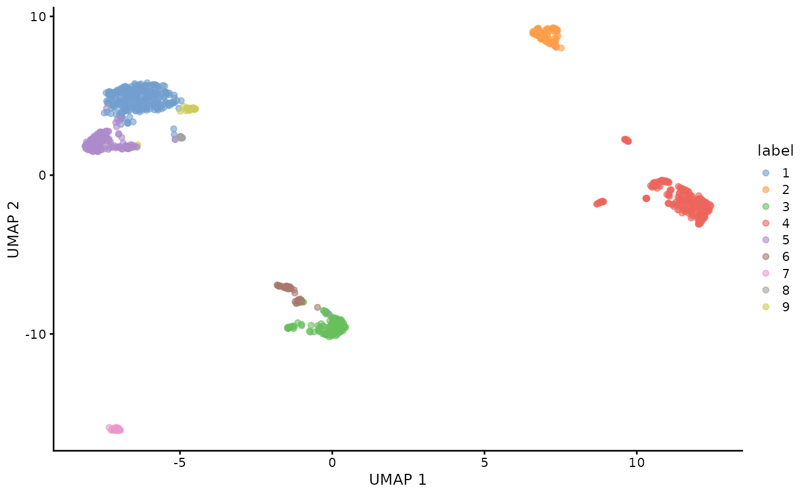
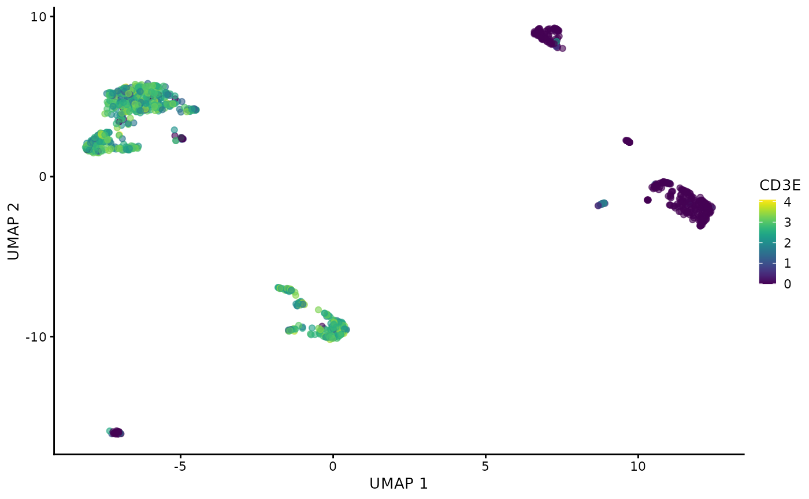
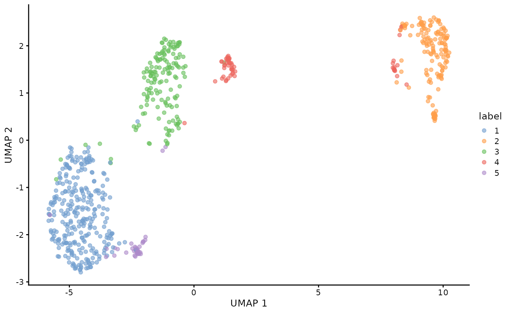

Creating MAMS from SingleCellExperiment
2024-08-28
sce_rmams_tutorial.RmdIntroduction
Matrix and Analysis Metadata Standards (MAMS) can be used to capture the relevant information about the data matrices and annotations that are produced during common and complex analysis workflows for single-cell data.
This workflow highlights how an RNA expression based experiment from a SingleCellExperiment object can be annotated using the rmams package. For this purpose, we will analyze the PBMC 1K dataset using packages from Bioconductor and with SingleCellExperiment as our data-container.
The steps include: - Importing the raw/droplet and filtered/cell matrices - Performing quality control and further subsetting the filtered matrix to only include high-quality cells - Clustering all cells - Clustering T-cells only
This workflow demonstrates how different subsets of cells/observations are produced due to QC/filtering or can be made based on different biological subsets. Note that the goal of this workflow is less about producing the best clustering results and cell type characterization. Rather it is focused on producing data/results that is commonly generated during real-world analyses which can be annotated with MAMS. For more information about MAMS, see the GitHub repository
Step 1: Creating the SingleCellExperiment object
Import data
Next, we will import raw/droplet and filtered/cell matrices:
sce.raw <- read10xCounts("../data/raw_feature_bc_matrix/")
sce.filtered <- read10xCounts("../data/filtered_feature_bc_matrix")
ensembl_ids <- rownames(sce.filtered)
gene_symbols <- mapIds(org.Hs.eg.db, keys = ensembl_ids, column = "SYMBOL", keytype = "ENSEMBL", multiVals = "first")
#> 'select()' returned 1:many mapping between keys and columns
rownames(sce.filtered) <- ifelse(is.na(gene_symbols), ensembl_ids, gene_symbols)Quality control
The filtered matrix is then subset based on some quality control metrics and mitchondrial percentage:
is.mito <- grep("mt-", rownames(sce.filtered))
sce.filtered.nonartifact <- quickPerCellQC(sce.filtered, subsets=list(Mito=is.mito), sub.fields="subsets_Mito_percent")Clustering
As the goal of many single cell workflows is to perform clustering to identify biologically relevant groups of cells, we will perform clustering on all cells that have passed QC metrics previously:
sce.filtered.nonartifact <- logNormCounts(sce.filtered.nonartifact)
dec <- scran::modelGeneVar(sce.filtered.nonartifact)
hvgs <- scran::getTopHVGs(dec, n = 2000)
sce.filtered.nonartifact <- scater::runPCA(sce.filtered.nonartifact, subset_row = hvgs)
g <- scran::buildSNNGraph(sce.filtered.nonartifact, use.dimred = "PCA")
clusters <- igraph::cluster_louvain(g)$membership
colLabels(sce.filtered.nonartifact) <- factor(clusters)
sce.filtered.nonartifact <- scater::runUMAP(sce.filtered.nonartifact, dimred = "PCA")
plotUMAP(sce.filtered.nonartifact, colour_by = "label")
plotUMAP(sce.filtered.nonartifact, colour_by = "CD3E", by_exprs_values = "logcounts")
Clustering of T-cells subset
sce.tcell <- logNormCounts(sce.tcell)
dec <- modelGeneVar(sce.tcell)
hvgs <- getTopHVGs(dec, n = 2000)
sce.tcell <- runPCA(sce.tcell, subset_row = hvgs)
g <- buildSNNGraph(sce.tcell, use.dimred = "PCA")
clusters <- igraph::cluster_louvain(g)$membership
colLabels(sce.tcell) <- factor(clusters)
sce.tcell <- runUMAP(sce.tcell, dimred = "PCA")
plotUMAP(sce.tcell, colour_by = "label")
Step 2: Creating the MAMS object from the SingleCellExperiment object
Load packages and import data
library(rmams)
# get the file paths of sce objects
file_paths <- c("../inst/extdata/pbmc1k_sce_raw.rds", "../inst/extdata/pbmc1k_sce_filtered.rds", "../inst/extdata/pbmc1k_sce_filtered_nonartifact.rds", "../inst/extdata/pbmc1k_sce_tcell.rds")
# get the names of these objects
file_names <- gsub(pattern = "\\.rds$", replacement = "", x = basename(file_paths))
# save the seurat objects onto the object_list by reading the object from file path.
object_list <- lapply(file_paths, readRDS)
# name the list objects using previously generated file_names.
names(object_list) <- file_names
# define the type of each subset
observational_subsets<-c("raw", "filtered","nonartifact","subset")
datasetid = "PBMC1K"Create MAMS object
result<- convert_SCE_to_MAMS(object_list,observational_subsets,datasetid)Accessing data
# Get the dataset_id from the first fom
fom(result,"fom1","dataset_id")
#> [1] "PBMC1K"Step 3: Validating MAMS object
fom(result,"fom1","dataset_id") <-""
check_MAMS(mams_object = result)
#> Warning: Please use the setter functions to add the missing field information for the following slots:
#> (Ex. If missing 'filepath' for fom1, then 'fom(mams = mams_object, fom_id = 'fom1', key = 'filepath') <- ...')
#> :
#> Warning in check_MAMS(mams_object = result): fom1 is missing the fields:
#> [1] "representation_description" "obs_unit"
#> [3] "processing" "processing_description"
#> [5] "analyte_description" "obs_subset"
#> [7] "obs_subset_description" "feature_subset"
#> [9] "feature_subset_description" "record_id"
#> [11] "parent_id" "parent_relationship"
#> [13] "parent_relationship_description" "fid"
#> [15] "obs" "fea"
#> Warning in check_MAMS(mams_object = result):
#> Warning in check_MAMS(mams_object = result): fom2 is missing the fields:
#> [1] "representation_description" "obs_unit"
#> [3] "processing" "processing_description"
#> [5] "analyte_description" "obs_subset"
#> [7] "obs_subset_description" "feature_subset"
#> [9] "feature_subset_description" "record_id"
#> [11] "parent_id" "parent_relationship"
#> [13] "parent_relationship_description" "fid"
#> [15] "obs" "fea"
#> Warning in check_MAMS(mams_object = result):
#> Warning in check_MAMS(mams_object = result): fom3 is missing the fields:
#> [1] "representation_description" "obs_unit"
#> [3] "processing" "processing_description"
#> [5] "analyte_description" "obs_subset"
#> [7] "obs_subset_description" "feature_subset"
#> [9] "feature_subset_description" "record_id"
#> [11] "parent_id" "parent_relationship"
#> [13] "parent_relationship_description" "fid"
#> [15] "obs" "fea"
#> Warning in check_MAMS(mams_object = result):
#> Warning in check_MAMS(mams_object = result): fom4 is missing the fields:
#> [1] "representation_description" "obs_unit"
#> [3] "processing_description" "analyte_description"
#> [5] "obs_subset" "obs_subset_description"
#> [7] "feature_subset" "feature_subset_description"
#> [9] "record_id" "parent_id"
#> [11] "parent_relationship" "parent_relationship_description"
#> [13] "fid" "obs"
#> [15] "fea"
#> Warning in check_MAMS(mams_object = result):
#> Warning in check_MAMS(mams_object = result): fom5 is missing the fields:
#> [1] "representation_description" "obs_unit"
#> [3] "processing_description" "analyte_description"
#> [5] "obs_subset_description" "feature_subset"
#> [7] "feature_subset_description" "record_id"
#> [9] "parent_id" "parent_relationship"
#> [11] "parent_relationship_description" "fid"
#> [13] "obs" "fea"
#> Warning in check_MAMS(mams_object = result):
#> Warning in check_MAMS(mams_object = result): fom6 is missing the fields:
#> [1] "representation_description" "obs_unit"
#> [3] "processing_description" "analyte_description"
#> [5] "obs_subset_description" "feature_subset"
#> [7] "feature_subset_description" "record_id"
#> [9] "parent_id" "parent_relationship"
#> [11] "parent_relationship_description" "fid"
#> [13] "obs" "fea"
#> Warning in check_MAMS(mams_object = result):
#> Warning in check_MAMS(mams_object = result): fom7 is missing the fields:
#> [1] "representation_description" "obs_unit"
#> [3] "processing" "processing_description"
#> [5] "analyte_description" "obs_subset"
#> [7] "obs_subset_description" "feature_subset"
#> [9] "feature_subset_description" "record_id"
#> [11] "parent_id" "parent_relationship"
#> [13] "parent_relationship_description" "fid"
#> [15] "obs" "fea"
#> Warning in check_MAMS(mams_object = result):
#> Warning in check_MAMS(mams_object = result): fom8 is missing the fields:
#> [1] "representation_description" "obs_unit"
#> [3] "processing_description" "analyte_description"
#> [5] "obs_subset" "obs_subset_description"
#> [7] "feature_subset" "feature_subset_description"
#> [9] "record_id" "parent_id"
#> [11] "parent_relationship" "parent_relationship_description"
#> [13] "fid" "obs"
#> [15] "fea"
#> Warning in check_MAMS(mams_object = result):
#> Warning in check_MAMS(mams_object = result): fom9 is missing the fields:
#> [1] "representation_description" "obs_unit"
#> [3] "processing_description" "analyte_description"
#> [5] "obs_subset_description" "feature_subset"
#> [7] "feature_subset_description" "record_id"
#> [9] "parent_id" "parent_relationship"
#> [11] "parent_relationship_description" "fid"
#> [13] "obs" "fea"
#> Warning in check_MAMS(mams_object = result):
#> Warning in check_MAMS(mams_object = result): fom10 is missing the fields:
#> [1] "representation_description" "obs_unit"
#> [3] "processing_description" "analyte_description"
#> [5] "obs_subset_description" "feature_subset"
#> [7] "feature_subset_description" "record_id"
#> [9] "parent_id" "parent_relationship"
#> [11] "parent_relationship_description" "fid"
#> [13] "obs" "fea"
#> Warning in check_MAMS(mams_object = result):
#> Error: Please use the setter functions to add the missing field information for the following slots:
#> (Ex. If missing 'filepath' for fom1, then 'fom(mams = mams_object, fom_id = 'fom1', key = 'filepath') <- ...')
#> :
#> Warning in check_MAMS(mams_object = result): fom1 is missing the fields:
#> [1] "dataset_id"
#> Warning in check_MAMS(mams_object = result):
#> Warning in check_MAMS(mams_object = result): The following slot is empty: ONG
#> Warning in check_MAMS(mams_object = result): The following slot is empty: FEA
#> Warning in check_MAMS(mams_object = result): The following slot is empty: OBS
#> Warning in check_MAMS(mams_object = result): The following slot is empty: FID
#> Warning in check_MAMS(mams_object = result): The following slot is empty: OID
#> Warning in check_MAMS(mams_object = result): The following slot is empty: REC
#> Warning in check_MAMS(mams_object = result): The following slot is empty: FNGStep 4: Updating fields manually
# add dataset id
fom(result,"fom1","dataset_id") <-"PBMC1K"
# by default all reduced dimensions are annotated as Reductions, but UMAP can be better reflected as Embedding
fom(result, "fom6", "processing") <- "Embedding"We can add some commands as well, e.g. the record for the generation of counts matrix:
record_id <- "CellRanger.count"
record_package_name<- "CellRanger"
record_function_name<- "count"
record_package_version<- "unknown"
result@REC[[record_id]]<- create_REC_object(record_package_name = record_package_name,
record_function_name = record_function_name,
record_package_version = record_package_version)Step 6: Saving MAMS object to JSON
Here we show how you can convert the MAMS object to the JSON format for export. MAMS and JSON formats are interchangeable.
write_MAMS_to_output(MAMS=result, filepath = "../inst/extdata/pbmc1k_rna_sce_mams.JSON",format = "JSON")Step 7: Saving MAMS as YAML
write_MAMS_to_output(MAMS=result, filepath = "../inst/extdata/pbmc1k_rna_sce_mams.yml",format = "YAML")Session Info
sessionInfo()
#> R version 4.4.1 (2024-06-14)
#> Platform: x86_64-pc-linux-gnu
#> Running under: Ubuntu 22.04.4 LTS
#>
#> Matrix products: default
#> BLAS: /usr/lib/x86_64-linux-gnu/openblas-pthread/libblas.so.3
#> LAPACK: /usr/lib/x86_64-linux-gnu/openblas-pthread/libopenblasp-r0.3.20.so; LAPACK version 3.10.0
#>
#> locale:
#> [1] LC_CTYPE=C.UTF-8 LC_NUMERIC=C LC_TIME=C.UTF-8
#> [4] LC_COLLATE=C.UTF-8 LC_MONETARY=C.UTF-8 LC_MESSAGES=C.UTF-8
#> [7] LC_PAPER=C.UTF-8 LC_NAME=C LC_ADDRESS=C
#> [10] LC_TELEPHONE=C LC_MEASUREMENT=C.UTF-8 LC_IDENTIFICATION=C
#>
#> time zone: UTC
#> tzcode source: system (glibc)
#>
#> attached base packages:
#> [1] stats4 stats graphics grDevices utils datasets methods
#> [8] base
#>
#> other attached packages:
#> [1] rmams_1.0.1 org.Hs.eg.db_3.19.1
#> [3] AnnotationDbi_1.66.0 patchwork_1.2.0
#> [5] scran_1.32.0 scater_1.32.1
#> [7] ggplot2_3.5.1 scuttle_1.14.0
#> [9] DropletUtils_1.24.0 SingleCellExperiment_1.26.0
#> [11] SummarizedExperiment_1.34.0 Biobase_2.64.0
#> [13] GenomicRanges_1.56.1 GenomeInfoDb_1.40.1
#> [15] IRanges_2.38.1 S4Vectors_0.42.1
#> [17] BiocGenerics_0.50.0 MatrixGenerics_1.16.0
#> [19] matrixStats_1.3.0 dplyr_1.1.4
#>
#> loaded via a namespace (and not attached):
#> [1] jsonlite_1.8.8 magrittr_2.0.3
#> [3] ggbeeswarm_0.7.2 farver_2.1.2
#> [5] rmarkdown_2.28 fs_1.6.4
#> [7] zlibbioc_1.50.0 ragg_1.3.2
#> [9] vctrs_0.6.5 memoise_2.0.1
#> [11] DelayedMatrixStats_1.26.0 htmltools_0.5.8.1
#> [13] S4Arrays_1.4.1 BiocNeighbors_1.22.0
#> [15] Rhdf5lib_1.26.0 SparseArray_1.4.8
#> [17] rhdf5_2.48.0 parallelly_1.38.0
#> [19] sass_0.4.9 bslib_0.8.0
#> [21] htmlwidgets_1.6.4 desc_1.4.3
#> [23] cachem_1.1.0 igraph_2.0.3
#> [25] lifecycle_1.0.4 pkgconfig_2.0.3
#> [27] rsvd_1.0.5 Matrix_1.7-0
#> [29] R6_2.5.1 fastmap_1.2.0
#> [31] GenomeInfoDbData_1.2.12 future_1.34.0
#> [33] digest_0.6.37 colorspace_2.1-1
#> [35] dqrng_0.4.1 irlba_2.3.5.1
#> [37] textshaping_0.4.0 RSQLite_2.3.7
#> [39] beachmat_2.20.0 labeling_0.4.3
#> [41] progressr_0.14.0 fansi_1.0.6
#> [43] httr_1.4.7 abind_1.4-5
#> [45] compiler_4.4.1 bit64_4.0.5
#> [47] withr_3.0.1 BiocParallel_1.38.0
#> [49] viridis_0.6.5 DBI_1.2.3
#> [51] highr_0.11 HDF5Array_1.32.1
#> [53] R.utils_2.12.3 DelayedArray_0.30.1
#> [55] bluster_1.14.0 tools_4.4.1
#> [57] vipor_0.4.7 beeswarm_0.4.0
#> [59] future.apply_1.11.2 R.oo_1.26.0
#> [61] glue_1.7.0 rhdf5filters_1.16.0
#> [63] grid_4.4.1 cluster_2.1.6
#> [65] generics_0.1.3 gtable_0.3.5
#> [67] R.methodsS3_1.8.2 rmdformats_1.0.4
#> [69] sp_2.1-4 BiocSingular_1.20.0
#> [71] ScaledMatrix_1.12.0 metapod_1.12.0
#> [73] utf8_1.2.4 XVector_0.44.0
#> [75] ggrepel_0.9.5 pillar_1.9.0
#> [77] spam_2.10-0 limma_3.60.4
#> [79] lattice_0.22-6 FNN_1.1.4
#> [81] bit_4.0.5 tidyselect_1.2.1
#> [83] locfit_1.5-9.10 Biostrings_2.72.1
#> [85] knitr_1.48 gridExtra_2.3
#> [87] bookdown_0.40 edgeR_4.2.1
#> [89] xfun_0.47 statmod_1.5.0
#> [91] UCSC.utils_1.0.0 yaml_2.3.10
#> [93] evaluate_0.24.0 codetools_0.2-20
#> [95] tibble_3.2.1 cli_3.6.3
#> [97] uwot_0.2.2 systemfonts_1.1.0
#> [99] munsell_0.5.1 jquerylib_0.1.4
#> [101] Rcpp_1.0.13 globals_0.16.3
#> [103] png_0.1-8 parallel_4.4.1
#> [105] pkgdown_2.1.0 blob_1.2.4
#> [107] dotCall64_1.1-1 sparseMatrixStats_1.16.0
#> [109] listenv_0.9.1 viridisLite_0.4.2
#> [111] scales_1.3.0 SeuratObject_5.0.2
#> [113] crayon_1.5.3 rlang_1.1.4
#> [115] cowplot_1.1.3 KEGGREST_1.44.1